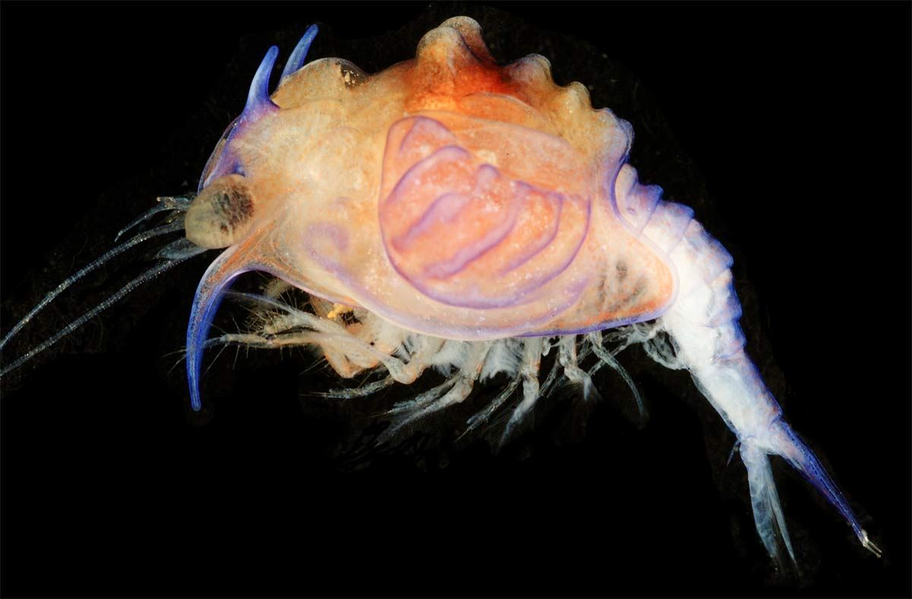
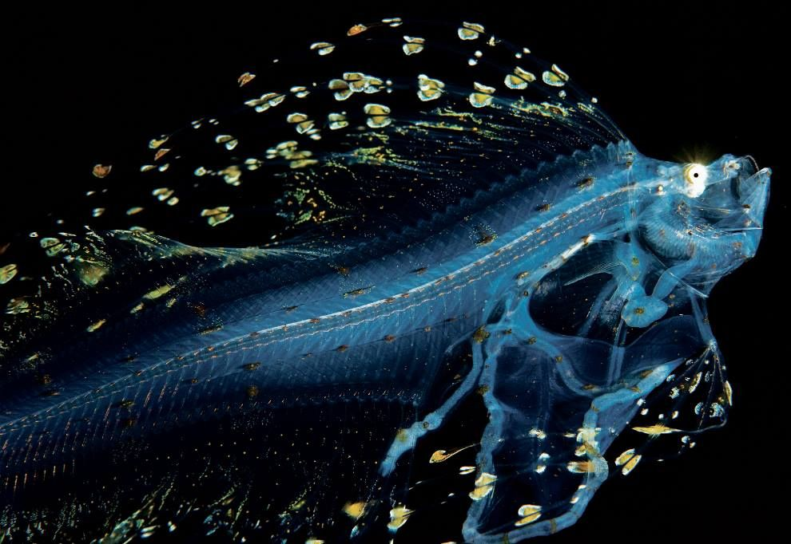
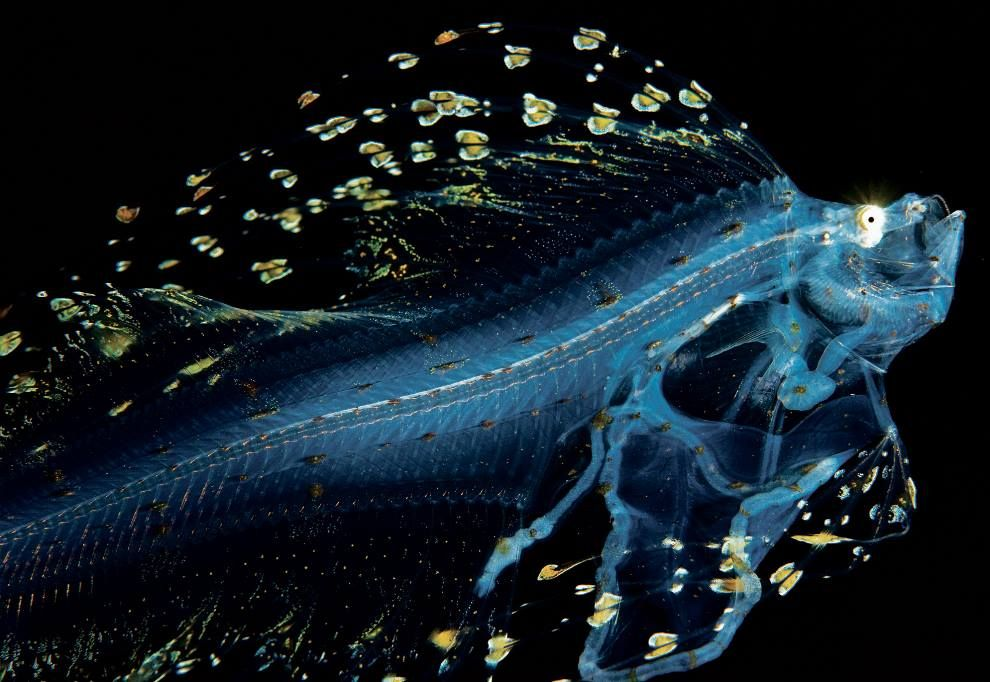
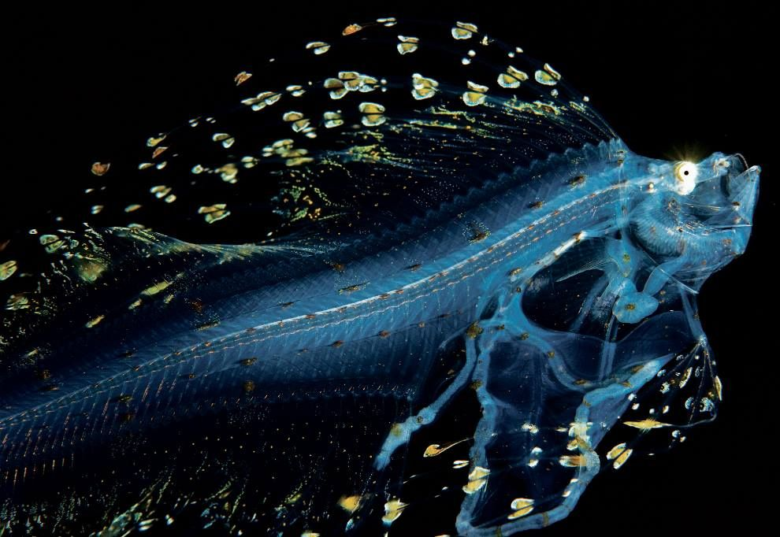

The Hadopelagic Zone
The Hadal Zone
Beyond the abyssopelagic zone lies the forbidding hadolpelagic zone. This layer extends from 6,000 meters to the bottom of the deepest parts of the ocean. These areas are mostly found in deep water trenches and canyons. The deepest point in the ocean is located in the Mariana Trench off the coast of Japan at 10,911 meters. The temperature of the water is just above freezing, and the pressure is an incredible eight tons per square inch. That is approximately the weight of 48 Boeing 747 jets. In spite of the pressure and temperature, life can still be found here. Invertebrates such as starfish and tube worms can thrive at these depths.
Marine Life

 

